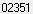
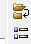

from sikuli import *
import logging
import csv
import myTools
#---------------------------------------------------#
def fSetup_TemplateRefs():
#---------------------------------------------------#
# switch to template clients
rightClick()
type("t")
time.sleep(1)
refDataFile = Settings.dataFolder + "\\templateRefs.csv"
allTemplateRefs = csv.DictReader(open(refDataFile))
for tempRef in allTemplateRefs:
logging.debug('- create reference: ' + tempRef["nn1"])
type("n",KeyModifier.CTRL)
type(tempRef["nn1"])
type(Key.TAB)
type(tempRef["nn2"])
type(Key.ENTER)
time.sleep(1)
#---------------------------------------------------#
def fExport_TemplateSetting():
#---------------------------------------------------#
# Also use Default template
logging.debug('- open Client Reference Setup')
type(Key.HOME)
click(Pattern().targetOffset(6,10))
# Also use template
type("t", KeyModifier.ALT)
type("d")
time.sleep(1)
# Export
type("e", KeyModifier.ALT)
time.sleep(1)
# choose all clients
if int(Settings.tsVersion) > 2014:
myTools.pressTAB(1)
type(Key.INSERT)
else:
click(Pattern().targetOffset(-7,-6))
type(Key.END, KeyModifier.SHIFT)
type(Key.SPACE)
time.sleep(1)
# click Export
type(Key.TAB)
type(Key.SPACE)
# click YES
time.sleep(1)
type(Key.ENTER)
# click OK
wait( , FOREVER)
type(Key.ENTER)
# click OK
type("d",KeyModifier.ALT)
type(Key.ENTER)
#---------------------------------------------------#
def fCreate_Refs():
#---------------------------------------------------#
myTools.sectionStartTimeStamp("create refs")
logging.debug('Create_Refs')
# make sure timeslips has focus
myTools.getFocus()
logging.debug('- open reference list')
type("r", KeyModifier.CTRL + KeyModifier.SHIFT)
time.sleep(1)
fExport_TemplateSetting()
fSetup_TemplateRefs()
type(Key.F4,KeyModifier.CTRL)
myTools.sectionEndTimeStamp()
, FOREVER)
type(Key.ENTER)
# click OK
type("d",KeyModifier.ALT)
type(Key.ENTER)
#---------------------------------------------------#
def fCreate_Refs():
#---------------------------------------------------#
myTools.sectionStartTimeStamp("create refs")
logging.debug('Create_Refs')
# make sure timeslips has focus
myTools.getFocus()
logging.debug('- open reference list')
type("r", KeyModifier.CTRL + KeyModifier.SHIFT)
time.sleep(1)
fExport_TemplateSetting()
fSetup_TemplateRefs()
type(Key.F4,KeyModifier.CTRL)
myTools.sectionEndTimeStamp()